Garapenerako ingurunea
Proiektu hau burutzeko CSS eta HTML hizkuntzak bakarrik erabili ahal genituen.
IDE gisa Visual Studio Code erabili dugu, web garapen esperientzia hobea izateko Prettier testu formateatzaile, Live Server eta Markdown-erako gehigarriekin.
Datu basea diseinatzeko Microsoft Access programa erabili dugu.
Webgunea desplegatzeko Nginx zerbitzaria aukeratu dugu.
Mapa interaktiboa Google Maps-en egin dugu eta irudiak GIMP-en editatu.
Azkenik, Trello plataforma erabili dugu gure artean organizatzeko eta bertsio kontrolerako Git softwarea, errepositorioa GitHub-en hosteatuz.
Organizazioa
Kanban
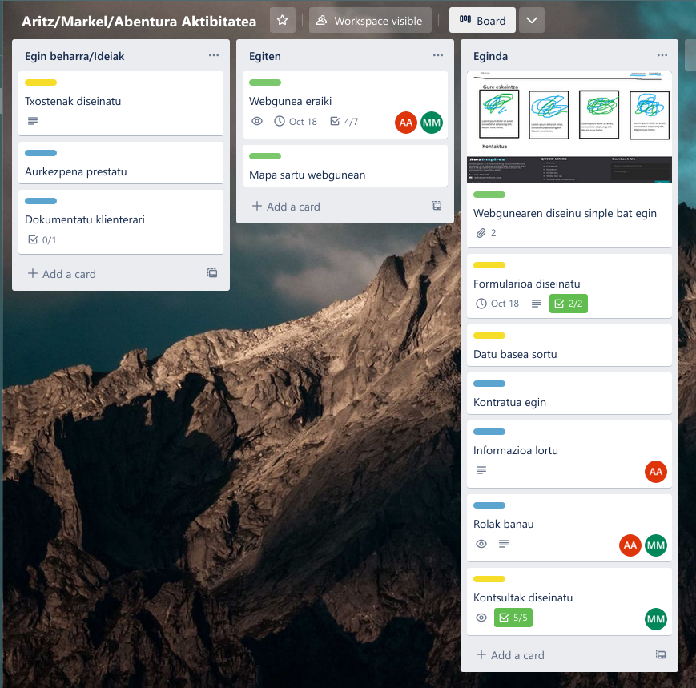
Trello izan da organizatzeko erabili dugun baliabide garrantzitsuena, bertan garapenaren prozesu guztia ikus daiteke. Zirriborroetatik hasita azken detaileetaraino.
Git
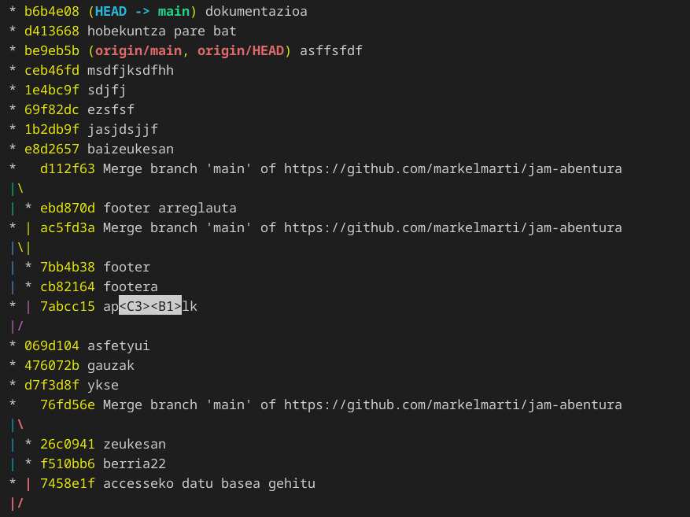
Git bertsio kontrolerako sistema ezagunena da. Gure arten kodea zinkronizatu eta bertsioak kontrolatzeko erabili dugu. Repositorya GitHub plataforman hosteatuta dago.
Aldaketak branch ezberdinetan egin ditugu, bukatutakoan adar nagusiarekin elkartuz (merge).
Datu basea
Datu basera sartzerakoan honako menu nagusi hau bistaratzen da (autoexec fitxategiaren bidez):
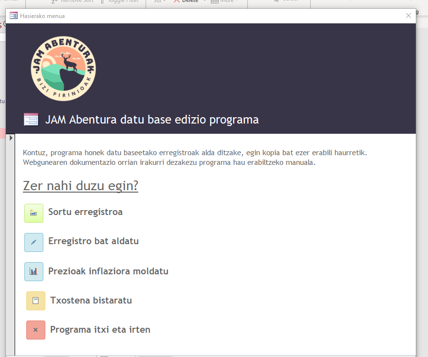
Bertan honako aukera hauek ditugu exekutatzeko:
- Erregistro berria sortu
- Erregistro bat eguneratu/aldatu
- Prezioak inflaziora moldatu
- Txostena bistaratu
- Datu basea gorde eta aplikaziotik irten
Erregistroa sortzea/eguneratzea
Prezioak inflaziora moldatzea
Gaur egun daukagun inflazioaren ondorioz garrantzitsua iruditu zaigu prozesu hau automatikoki egiteko sistema bat sortzea.
Menu nagusiko inflazioaren programaren botoia klikatuz gero honako menu hau bistaratuko da, parametro honek urteko inflazioaren zenbaki dezimala hartzen du:
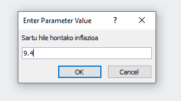
Sartu diogun datuarekin taulako Prezioa eremuaren balio berria kalkutzen du formula hau erabiliz:
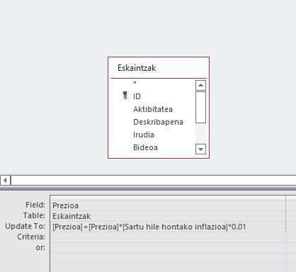
Datu basearen beste ezaugarri batzuk
- Debalde diren jarduera guztiak borratu daitezke delete query baten bidez. (Akzio kontsulten erronka)
- Taldekatze kontsulta batekin jarduerak egiteko aukeran dauden toki guztiak listatu daitezke.
Webgunea
Egin klik hemen webgunera joateko
Diseinua
Webgunea eraikitzen hasi aurretik diseinua garbi izatea nahi genuen, aldaketak gero egitea zailagoa da eta.
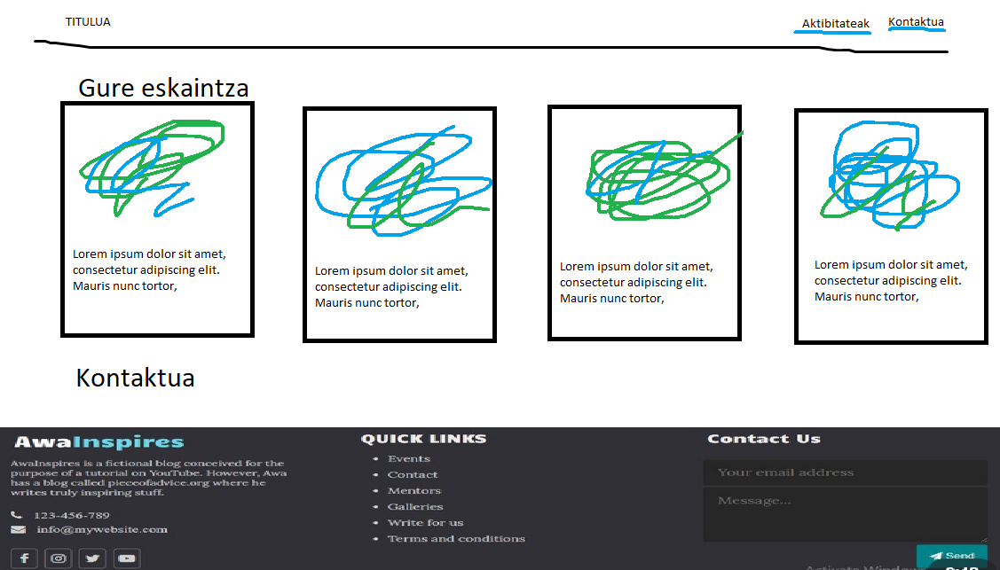
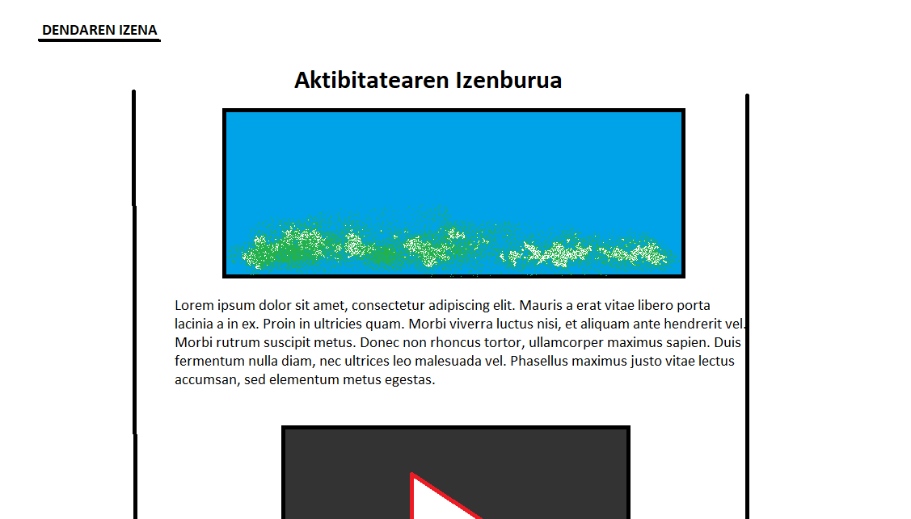
Ikusten den bezala, webgunearen bukaerako diseinua ez da asko aldatu hasieran egin genuen prototipotik.
Egitura
- Hasierako orria
- Aurkezpen testua
- Aktibitate kartak
- Mapa interaktiboa
- Aktibitateen orriak
- Jarduera
- Azalpena
- Arauak
- Prezioa
- Bideoa edo/eta argazkiak
- Jarduera
- ...
- Jarduera
- Dokumentazioa
- (Ikus. horri honen indizea)
Nabigazio barra
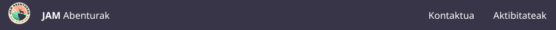
Nabigazio barra orri guztietan erakusten da. Bertan klikatuz (Ezkerretik eskubira) orri nagusira, kontaktua atalera eta aktibitateen atalera birbidaltzen zaitu.
.nav {
position: fixed;
top: 0;
width: 100%;
}Posizio finko bat duen div bat besterik ez da.
Barruko elementuak unordered list baten barruan sartzen ditugu eta irudiko "bloke" itxura ematen diogu:
ul {
list-style-type: none;
margin: 0;
padding: 0;
overflow: hidden;
background-color: #393548;
}Mapa
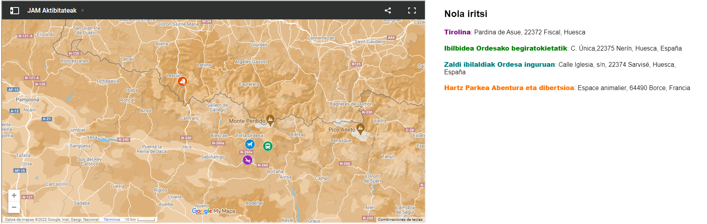
Pentsatu duguna izan da aktibitate bakoitzaren kokapena mapan jartzea eta bakoitzari kolore desberdina jartzea.
Google my maps erabili dugu, ondoren aktibitate bakoitzan kokapena. Kokapen guztiak ipini ondoren iframe etiketaren bidez mapa txertatu dugu orrian.
Kartak
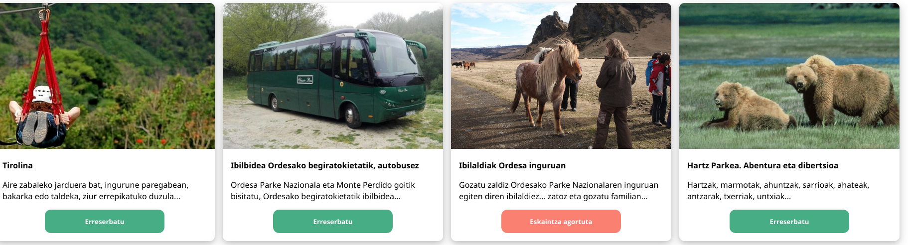
Kartak CSS-ko grid baten barruan doazen elementu klikagarriak dira.
Lehenik eta behin grid klase hori sortu behar dugu:
.cards {
display: grid;
grid-template-columns: repeat(4, 1fr);
grid-auto-rows: auto;
grid-gap: 1rem;
}Lau zutabeko sare bat sortu dugu eta grid-auto-rows propietatearen bidez elementu gehiago sartuz gero beste lerro batean joango dira kokatzen.
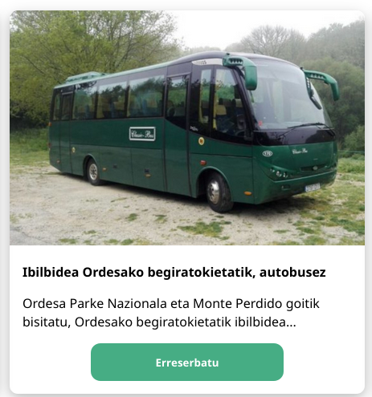
<div class="card" onclick="location.href='aktibitateak/parkea'">
<img class="image" src="argazkiak/hartzak.jpg" />
<div class="card-text">
<b>Hartz Parkea. Abentura eta dibertsioa</b>
<p>
Hartzak, marmotak, ahuntzak, sarrioak,
</p>
<div class="center">
<button class="button">
<span>Erreserbatu</span>
</button>
</div>
</div>
</div>Card klaseak padding eta border batzuk besterik ez ditu.
Karta bakoitzari onClick() funtzioarekin beste orrialde batera berbideratzeko agindua ematen diogu.
Botoia berriz klase korapilotsuagoa da, animazioa daukalako
.button {
width: 240px;
background: #46ad84;
text-align: center;
line-height: 45px;
border-radius: 12px;
color: #fff;
cursor: pointer;
font-weight: bold;
border: none;
}
.button:hover {
animation: shake 0.82s cubic-bezier(0.36, 0.07, 0.19, 0.97) both;
transform: translate3d(0, 0, 0);
perspective: 1000px;
}
@keyframes shake {
10%,
90% {
transform: translate3d(-1px, 0, 0);
}
20%,
80% {
transform: translate3d(2px, 0, 0);
}
30%,
50%,
70% {
transform: translate3d(-4px, 0, 0);
}
40%,
60% {
transform: translate3d(4px, 0, 0);
}
}Sagua gainetik pasatzerakoan hainbat transformazio egiten ditu, hau da, mugitu egiten da.
Footer-a
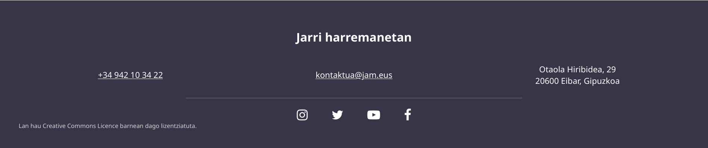
Footerrean datuak eta ikonoak berriro ere grid batekin alineatu ditugu.
Emailaren helbidea klikatuz gero momentuan mail bat bialtzeko aukera ematen du "mailto:" formatua erabili dugulako.
Sare sozialetako ikonoak FontAwesome letra-tipotik datoz.
Jarduera orriak
Jardueraren orriak testura orientatuta daudenez web-egunkari bateko diseinuan inspiratu gara, erdian, paper itxurako lauki baten kokatzen da testua eta irudiak. Prezio aukera edo aukerak karta itxurako lauki batzutan daude ere. Bideoak Youtubetik txertatu ditugu.
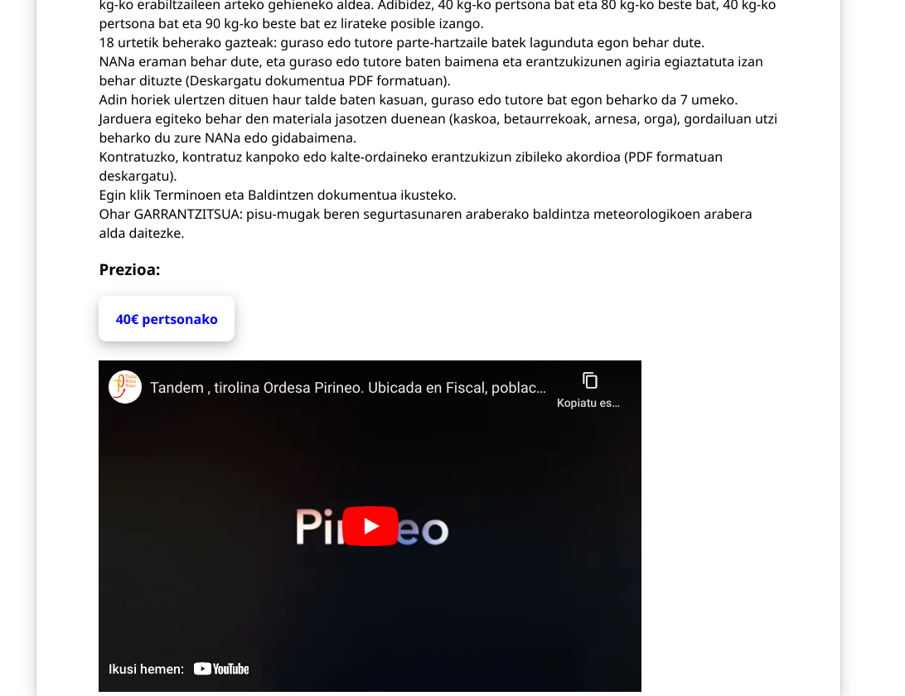
Despliegea
Windows sistemetarako oharra:
Nginx zerbitzaria instalatzeko WSL azpisistema behar da. Hasteko bila ezazu "Turn Windows features on" programa bilatzailean. Programa ireki eta Windows Subsystem for Linux aktibatu. WSL-ren instalazioa burutu ostean Ubuntu distribuzia instalatu dezakezu Microsoft Storetik.
Ubuntu sistema bat dugularik, Nginx instalatu dezakegu terminalaren bidez komando hauek exekutatuz:
sudo add-apt-repository ppa:nginx/stable
sudo apt-get update
sudo apt-get install -y nginxZerbitzaria hasteko:
sudo service nginx startGure nabigatzailean localhost:80 url sartu eta honako orri hau agertzen bada ondo joan da instalazioa:
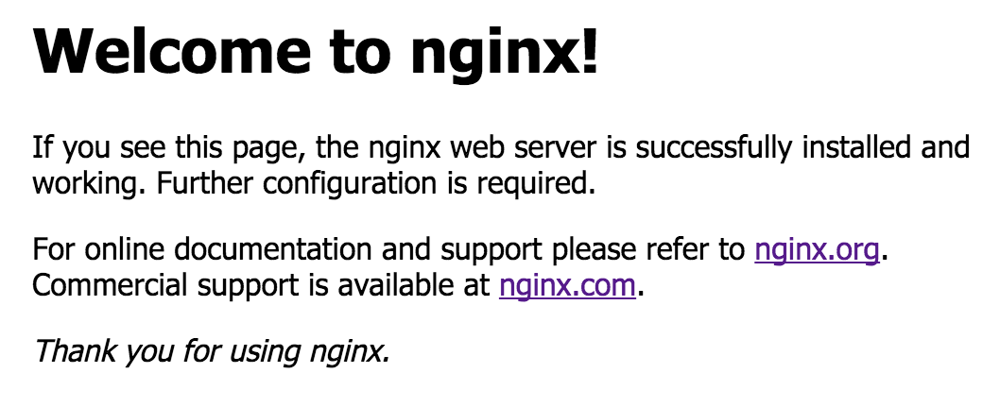
Aurkezpenerako oharra:
Sareko ordenagailu bateko nabigatzailean IP hau sartuz gero gure webgunea azalduko da:192.168.72.16